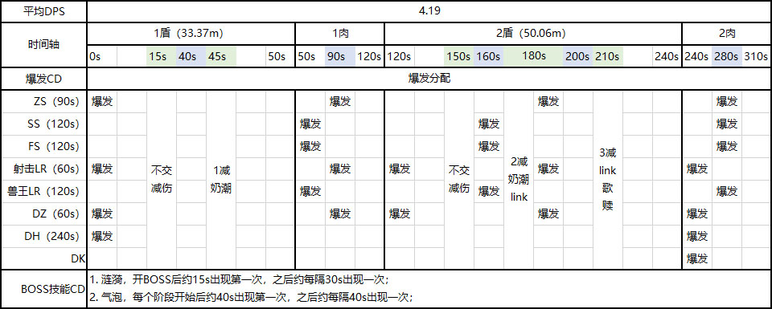

1. 翻滚涟漪是造成减员的主要技能，AOE伤害导致血崩，撞球产生的DEBUFF叠加过高同理。
2. 在BOSS有盾的阶段下，第一次翻滚涟漪大约是在开BOSS后15秒左右出现，间隔30秒左右出现第二次；
3. BOSS能量回满到100重新出现盾的时间大约为70秒；
1. 开BOSS后的第一个盾为BOSS血量30%约35.13m,在第三次翻滚涟漪出现前（75秒内）打掉为理想情况，平均DPS最少为46.84W/S。
2. 第二个盾为BOSS血量30%并增强150%，约52.695m,在第四次翻滚涟漪出现前（105秒内）打掉为理想情况，平均DPS最少为50.18W/S。
3. 在第三个盾出现前共计约140秒时间打本体，平均DPS最少为83.64W/S。
1-1：不交减伤，治疗硬刷
1-2：奶潮
2-1：不交减伤，治疗硬刷
2-2：奶潮+link，看情况配合糖及个人减伤
2-3：link+赞美诗+赎，看情况配合糖及个人减伤

硬化之壳保护着艾什凡女勋爵，吸收相当于她最大生命值40%伤害。
每次艾什凡重新长出甲壳，甲壳都会增强150%。
说明：要先打盾，盾碎了才能打本体。
在前方召唤出从地面冒出的结节珊瑚，对10码内玩家造成69,189点自然伤害并将其击退。
说明：地上会有土黄色的漩涡圈，远离。
艾什凡女勋爵践踏大地，使所有增生珊瑚释放一道翻滚涟漪，向她所在的位置滚去。
每一道接触到艾什凡的涟漪都会使她的硬化甲壳恢复10%，并对所有玩家造成69,190点冰霜伤害。
任何玩家触碰到翻滚涟漪会引发爆炸，对所有玩家造成44,649点冰霜伤害，同时，引发爆炸的玩家将受到浸水的影响。
在史诗难度下，距离艾什凡女勋爵最远的一株增生珊瑚会释放一道强化翻滚涟漪。
说明：每个珊瑚都会出现一个小水球，BOSS吃到水球盾会加厚，所以有盾的时候需要安排人去撞掉这个水球，除指定的人外，都远离这个水球。
每3秒造成25,946点冰霜伤害，持续20分钟。该效果可叠加。
说明：撞到水球的人会有这个DEBUFF，约等于永久。
艾什凡女勋爵制造一道巨大的翻滚涟漪，涟漪会回到她身边，使硬化甲壳至多恢复30%，并对所有玩家造成至多207，570点冰霜伤害。
每有一名玩家触碰到强化翻滚涟漪都会使其范围变小，使硬化甲壳的恢复量减少10%，并对所有玩家造成69，190点冰霜伤害。此外触碰分玩家还会变为浸水
当涟漪被触碰3次时，它就会爆炸。
说明：大的水球需要撞3次才会消失，每撞一次叠一层浸水。
向目标所在位置发射一道水流，使12码内的所有玩家困在咸水气泡内，使其无法行动，直至气泡被摧毁。受困时，气泡每1.5秒造成26,790点自然伤害。
说明：中了点名的人及在该技能范围内(蓝色的圈)的人会在DEBUFF结束后进入水泡中，需要DPS将水泡打掉才能恢复行动。
这里需要结合实际情况考虑跟谁集合站位方便转火打BOSS。
艾什凡女士在数名玩家脚下释放水柱，对冲击点6码内所有玩家造成71,440点冰霜伤害，并将它们击飞到空中。
说明：地面上会出现水蓝色的漩涡圈，远离。伤害不是很高，但是掉落会摔血，小心直接摔死
艾什凡女勋爵猛击当前目标，造成107,159点物理伤害，并使壶蔓猛击对目标造成的伤害提高150%，持续35秒。此外，制造一块锋利的珊瑚。
说明：T需要注意的技能，注意不要踩上去就好。
一片长满尖锐珊瑚的区域从地下钻出，没1.5秒对站在该区域的玩家造成35,735点自然伤害。
说明：不要踩
艾什凡女勋爵的艾泽里特辐射周期性爆发，对数个目标发射能量箭矢，造成17,859点奥术伤害。
说明：加血..
艾什凡女勋爵创造出至多3对注入艾泽里特的玩家，这些玩家将在10秒后释放出一道冲击波。
冲击波对所有站在两个标记目标之间的连线上的玩家造成71,440点奥术伤害。此外，路径上所有生长的珊瑚都会被摧毁。
说明：WOW版“珊瑚忍者”游戏。同样颜色标记的分站在需要切的珊瑚两头，保持三点一线，线上不要有人。
当增生珊瑚被艾泽里特弧光打碎时，数个珊瑚碎片会飞到空中并在5秒后落地，对冲击点4码范围内的所有人造成69,189点自然伤害。
如果碎片没有被玩家拦截，则落地点会长出新增的增生珊瑚。
说明：切完珊瑚后，地面上会出先绿色的小圈，需要站在里面，不站的圈会有新的珊瑚出现。
说明：跟一阶段一样。
说明：跟一阶段一样。
说明：跟一阶段一样。